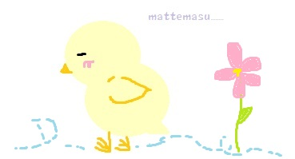

月曜日と金曜日に第２体育館で活動しています。
仲良く、上下関係もなく、楽しい部活です☆
器械体操とはとてもやりがいのあるスポーツです！
体育の授業でも、もちろん目立てます！
そして、体操で得られる柔軟性や筋力はダンスやチアリーディングでも役に立ちます。
器械体操をする人は、実はダンスなどをする人が多いのです…♪

↑前宙をしている某君です！おばけじゃないですよ！♪
体操部のGood Points
まず、体操部は部費がかかりません！器械体操経験が豊富な顧問の先生が一人ひとり丁寧に教えてくれます。
各自で確実に上手になれます。
体操部に入って３年目の初心者からはじめた部員たちは
前方宙返りやバク転の練習をしています。
中学３年生のほとんどはもう転回はできます！週２回でも上手になれるのです。
そして、部活は週２回しかない分、ほかの部活との兼部も可能です！
なのでいそがしい方も大歓迎です☆

最後に少し…
 _
_ _
_